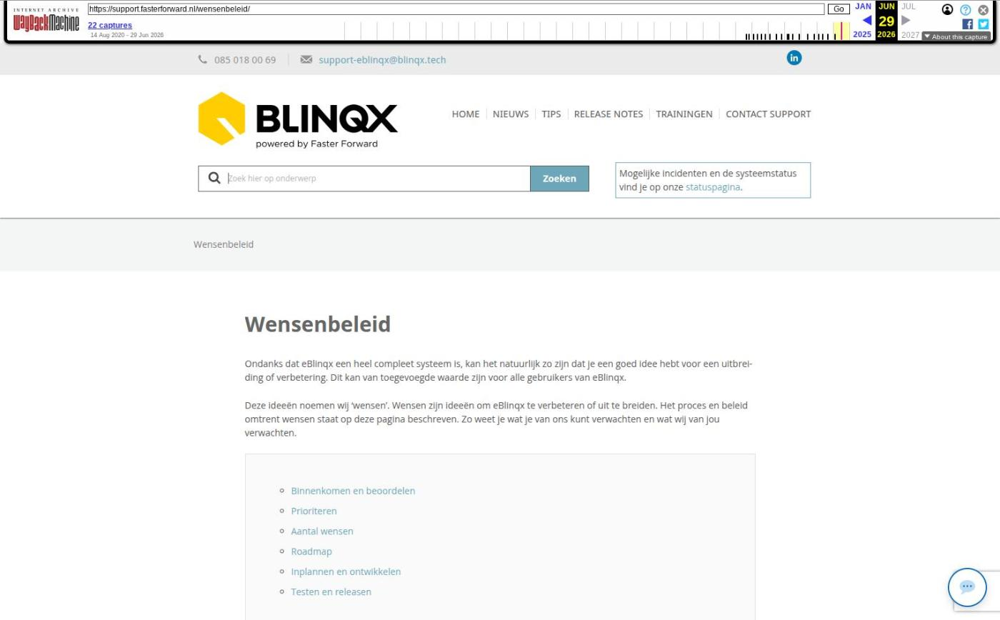

Wensenbeleid

Tekstinhoud
Wensenbeleid
Ondanks dat eBlinqx een heel compleet systeem is, kan het natuurlijk zo zijn dat je een goed idee hebt voor een uitbreiding of verbetering. Dit kan van toegevoegde waarde zijn voor alle gebruikers van eBlinqx.
Deze ideeën noemen wij ‘wensen’. Wensen zijn ideeën om eBlinqx te verbeteren of uit te breiden. Het proces en beleid omtrent wensen staat op deze pagina beschreven. Zo weet je wat je van ons kunt verwachten en wat wij van jou verwachten.
Binnenkomen en beoordelen
Prioriteren
Aantal wensen
Roadmap
Inplannen en ontwikkelen
Testen en releasen
Binnenkomen en beoordelen
Wensen ontvangen wij zowel direct van onze gebruikers, als intern van collega’s. Onze support- en consultancy collega’s spreken veel gebruikers en dragen dan wensen aan die zij regelmatig terug horen komen.
Allereerst wordt jouw wens beoordeeld door onze product owners. Zij beoordelen of de wens mogelijk is, of het generiek (voor veel van onze klanten) een goede toevoeging zou zijn en of het (technisch en praktisch) haalbaar is. Je ontvangt na het beoordelen een update per e-mail waarin staat of de wens goed- of afgekeurd is.
Gezien de hoeveelheid wensen die wij binnenkrijgen, kunnen we helaas niet meer op alle wensen reageren. In sommige gevallen ontvangt u een verzoek tot meer informatie, of nemen we telefonisch contact op. Het gebeurt ook regelmatig dat wij wensen bundelen wanneer we met een bepaalde module aan de slag gaan. We proberen dan zoveel mogelijk wensen ineens te verwerken in dezelfde module.
Prioriteren
Vervolgens wordt de wens geprioriteerd door ons release-team. Dit team bestaat uit verschillende disciplines binnen Blinqx Bergen op Zoom: consultancy, customer relations, development, sales, support. Door het toekennen van een bepaalde waarde aan een wens (en een formule die de zwaarte bepaald) komt de wens in een prioriteitenlijst terecht. Hoe hoger op de lijst, hoe groter de kans dat de wens op korte termijn geïmplementeerd wordt.
Indien de wens laag op de prioriteitenlijst geplaatst wordt, kan het zijn dat deze in de “koelkast” wordt geplaatst. Dit zijn wensen die een goede verbetering of uitbreiding van eBlinqx zijn, maar die niet op korte termijn worden opgenomen in een release-update. Dit komt door de grote hoeveelheid andere wensen. Om de wens toch niet uit het oog te verliezen, slaan wij deze altijd op in ons systeem. Mochten wij in de toekomst aan de slag gaan met het onderdeel van eBlinqx waar jouw wens over gaat, dan kunnen wij deze eenvoudig terugvinden en eventueel combineren in de ontwikkeling.
Aantal wensen
Elk jaar ontvangen we meer dan 600 wensen. Als wij deze allemaal zouden uitvoeren, gaat onze ontwikkelcapaciteit hieraan volledig op. Hier moeten we keuzes in maken.
Roadmap
De wensen van eBlinqxgebruikers zijn niet de enige ontwikkelingen die benodigd zijn om eBlinqx draaiende te houden. We hebben daarnaast nog te maken met noodzakelijk updates. Bijvoorbeeld wanneer bepaalde technieken vernieuwen en daarvoor aanpassingen moeten worden doorgevoerd. Maar daarnaast willen we ook grote release-updates ontwikkelen, met daarin nieuwe functionaliteiten. Hiervoor moet tijd gereserveerd worden. Deze “grotere” releases noemen wij roadmap-punten en deze worden geprioriteerd door de directie.
Inplannen en ontwikkelen
Wanneer jouw wens is ingepland voor een release ontvang je een update per e-mail. De wens wordt eerst uitgewerkt door onze product owners tot een userstory. Hierin worden de vereisten voor de nieuwe functionaliteit (wens) beschreven, gecombineerd met de bestaande mogelijkheden in eBlinqx. Met deze userstory gaan de programmeurs aan de slag, om de wens daadwerkelijk te ontwikkelen.
Testen en releasen
Nadat de programmeurs de nieuwe functionaliteit ingebouwd hebben in eBlinqx, test onze kwaliteitsmanager of hij de gewenste resultaten krijgt. Hij kijkt hierbij naar de originele beschrijving van de wens, maar ook naar de bestaande functionaliteiten in eBlinqx. Wanneer er geen foutmeldingen optreden en alles werkt zoals verwacht én gewenst, kan de wens worden meegenomen in de release. Een release kent altijd meerdere punten die ontwikkeld moeten worden, dus pas als alle wensen ontwikkeld én getest zijn, kan de release live gezet worden. Hiervoor wordt een datum geprikt en vanaf dat moment kun je gebruik maken van jouw wens in eBlinqx.